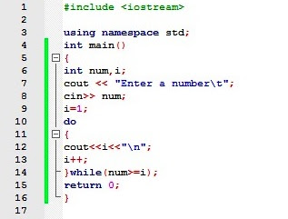
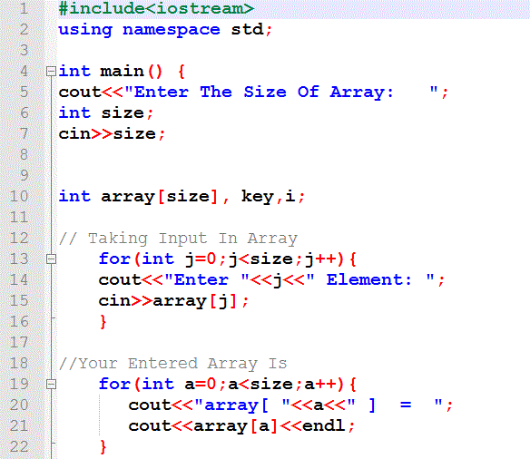
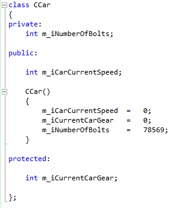

C++ Language
C++ is a general-purpose programming language. It has imperative, object-oriented and generic programming features, while also providing facilities for low-level memory manipulation.
It was designed with a bias toward system programming and embedded, resource-constrained and large systems, with performance, efficiency and flexibility of use as its design highlights.[6] C++ has also been found useful in many other contexts, with key strengths being software infrastructure and resource-constrained applications,[6] including desktop applications, servers (e.g. e-commerce, web search or SQL servers), and performance-critical applications (e.g. telephone switches or space probes).[7] C++ is a compiled language, with implementations of it available on many platforms. Many vendors provide C++ compilers, including the Free Software Foundation, Microsoft, Intel, and IBM.
Some Screenshots
  Simple functions are:
- cout
- cin
- strlen
- puts
- gets